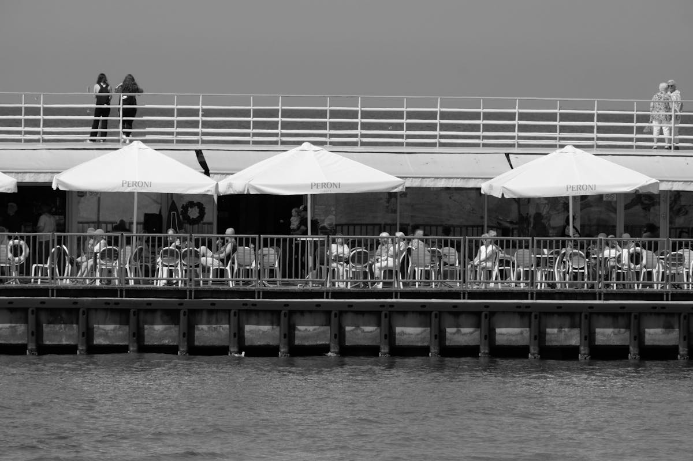

The Hamptons, But Actually Helpful
A local guide to beaches, restaurants, and the perfect weekend getaway.
Explore the Hamptons
Here are three things you need to know before planning your trip.
Where to Stay
A breakdown of the best areas to stay in the Hamptons, including Montauk, East Hampton, and Amagansett, depending on budget and vibe.
Where to Eat
A curated list of favorite local restaurants and cafes, including casual lunch spots and popular dinner reservations.
What to Do
Recommendations for beach days, biking, shopping in town, sunset spots, and nightlife.
My Ideal 48-Hour Hamptons Itinerary
This section highlights a full weekend plan, including where to go on a Friday night, what beaches to visit on Saturday, and the best brunch and activities for Sunday.

Beach Rules and Packing Tips
A short guide on what to bring to the beach, parking rules, and general tips for having a smooth beach day.
Getting There and Getting Around
Information about taking the train from NYC, driving tips, and how to get around once you are in the Hamptons.